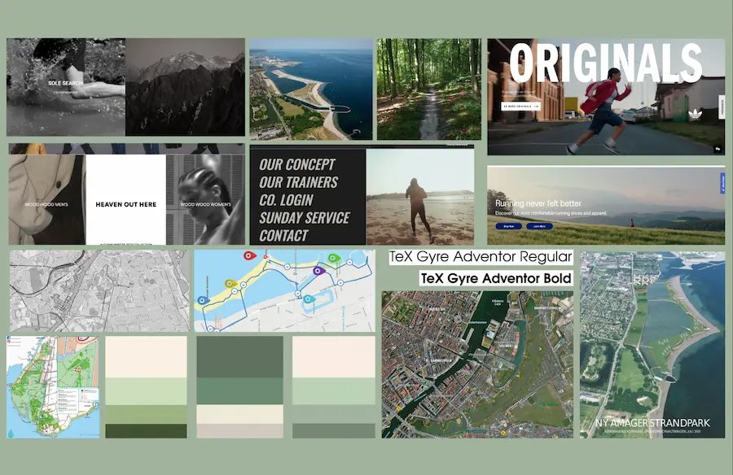
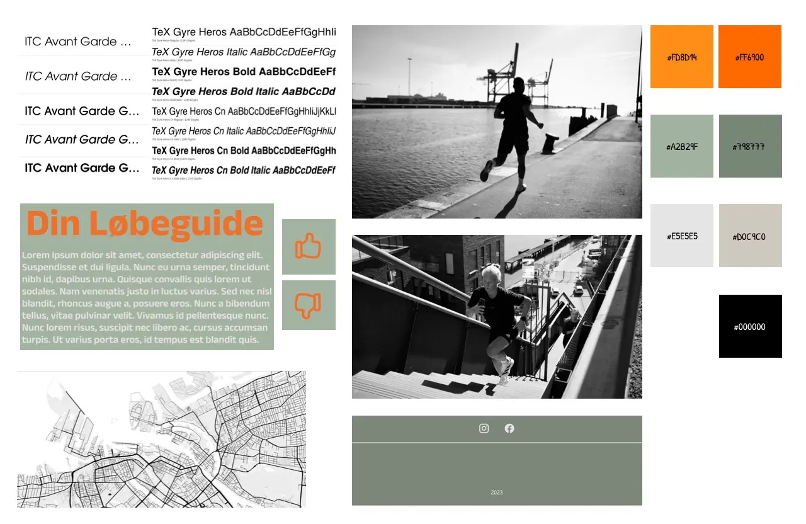
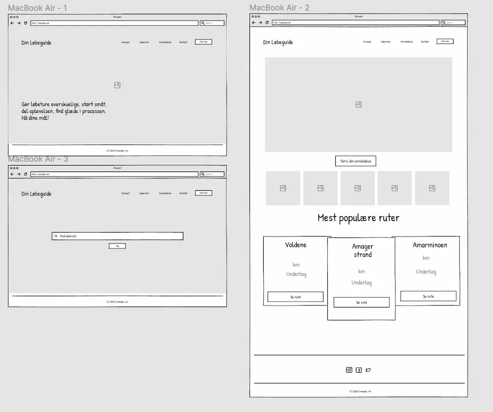
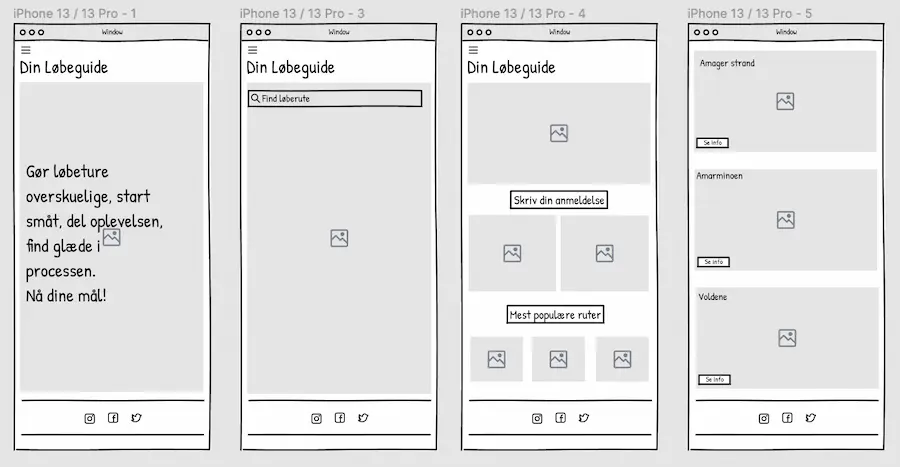
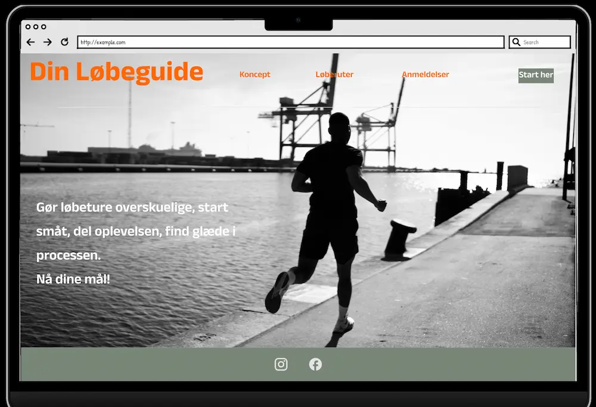
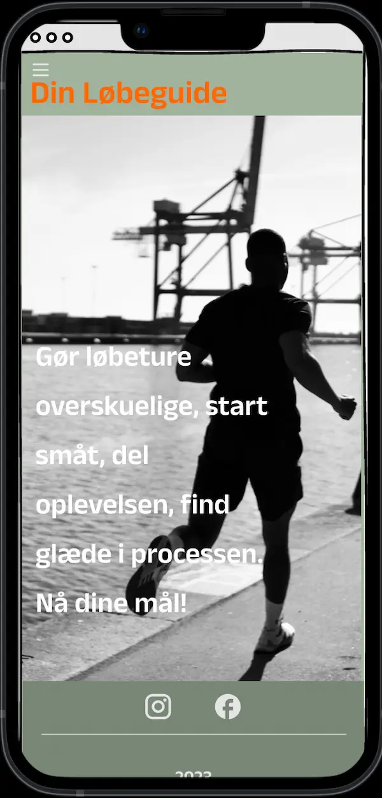

Grundlæggende UX
Opgave
Temaet ”Grundlæggende UX” inviterede til UX/UI-designerens rolle i forbindelse med forskellige udviklingsmetoder. Gennem forskellige designdiscipliner samt at arbejde i iterative processer blev det muligt at udvikle en hjemmeside baseret på en digital prototype og layoutdiagram. Jeg valgte at lave et informerende site til folk der ønsker forskellige løberuter i København.
Emne:
En hjemmeside med løberuter i København. Ruterne skal være overskuelige og let tilgængelige.
Målgruppe:
Folk der ønsker at variere løberuter.
Formål:
Formålet med hjemmesiden er at belyse og informere folk, der ønsker flere forskellige ruter til løberuter på i København. Websitet skal bruges til at inspirere folk til at se flere forskellige områder samt holde folk igang med fysisk aktivitet.
Storyboard og Crazy 8
En del af processen var at lave et storyboard over det valgte emne. Her opstillede jeg det scenarie min ide tog udgangspunkt i.
Efterfølgende skulle ideprocessen omkring hvordan sitets opbygning igangsættes. Dette blev løst med en effektiv skitsemetode, som hedder Crazy 8. Her kunne alle ideerne visualiseres.
Design proces
Relevante værktøjer som moodboard og styletile blev implementeret for at skabe en sammenhængende stil for hjemmesiden. Her tilføjede jeg dermed tre værdiord til designet: urban, enkelt, naturligt.
Moodboard
Styletile
Elementerne fra det færdige moodboard og styletile blev derefter anvendt til yderligere udvikling af wireframes og digitale prototyper i Figma. Disse prototyper kunne efterfølgende testes af brugere, der bidrog til at finde løsninger som kunne inkorporeres i designet før det kodes.
Wireframe Desktop
Wireframe Mobil
Prototype Desktop
Prototype Mobil
Sitemap
Vi blev introduceret til at lave et sitemap. Dette kunne give os en struktureret oversigt over indholdet på hjemmesiden.
Præsentation af site
Afslutningsvis præsenterede jeg den endelige opgave som en pitch, hvor jeg delte min arbejdsproces og min løsning. Gennem konstruktiv feedback fik jeg indsigt i hvordan jeg kunne formidle lignende præsentationer fremadrettet. Selve arbejdsprocessen bidrager til at underbygge mine tanker og valg. Jeg kunne dermed sagtens fremvise mere af det. Derudover havde det været oplagt at inkludere Tænke-Højt Testen som en relevant del af min præsentation.